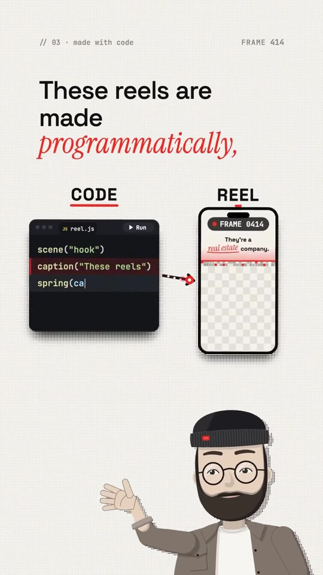
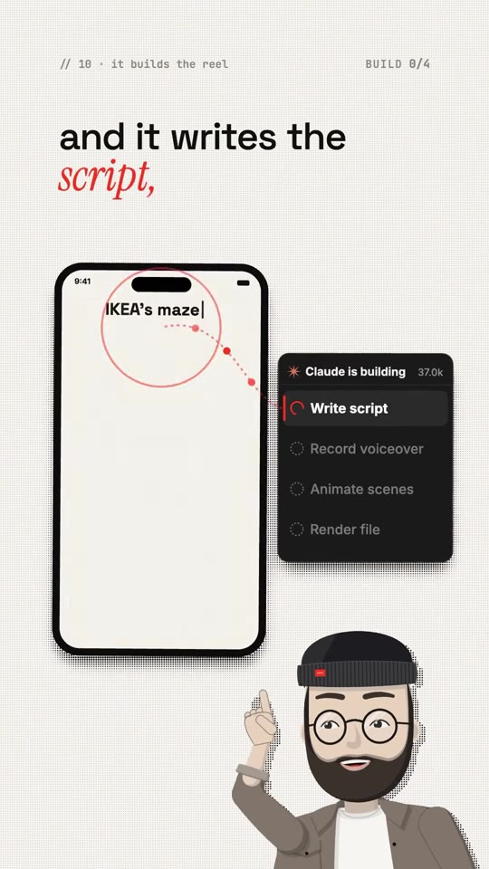
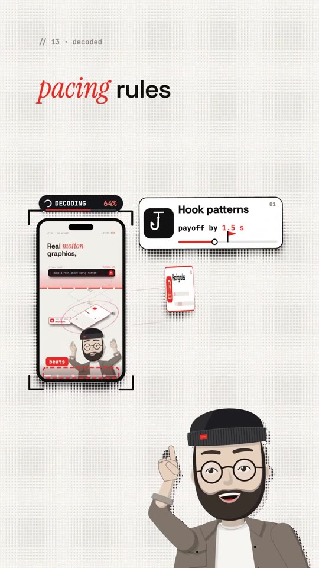
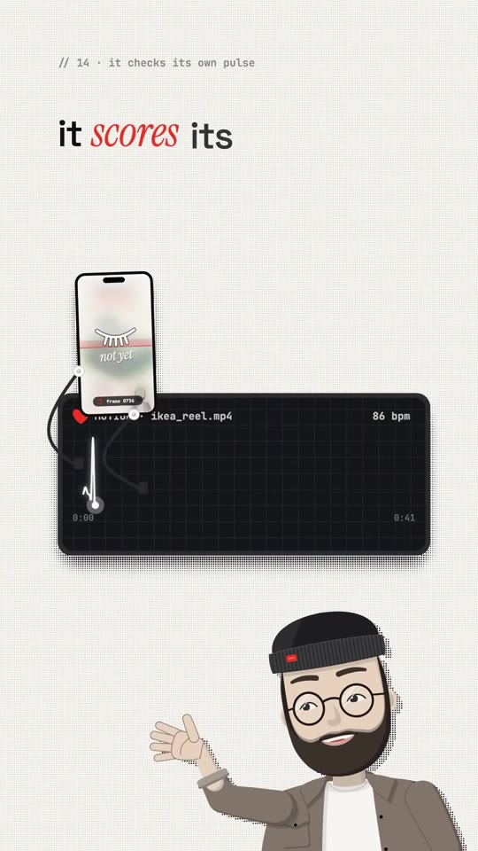

Video-Creation · AI-Explainers
Programmatic Short-Form Video Generation: The Claude Code-to-Video Engine
An architectural breakdown of a programmatic code-driven video synthesis pipeline powered by a custom Claude Skill (ai-video). Unlike probabilistic text-to-video AI generators that produce random, glitchy motion, this system programmatically generates scripts, synchronizes text-to-speech voiceovers, animates modular multi-style scenes (Classic, 3D Explainer, Illustrated) using code-based rendering engines (e.g. Remotion/Canvas at 30 fps), and runs an automated motion-scoring pulse test to eliminate dull or flat pacing moments prior to final rendering.

System Architecture & Pipeline
- Code-Driven Determinism vs. Diffusion Models:
- Traditional text-to-video diffusion models (Runway, Sora) suffer from uncontrollable hallucinations, visual morphing, and text rendering errors.
- Programmatic video uses declarative code (
reel.jswith components likescene('hook'),spring(card),presenter.point()) compiled deterministically into 30 fps video frames.
- Single-Prompt Autonomous Build Pipeline (4 Stages):
- Write Script: Analyzes topic prompt (e.g. “make a reel about why IKEA makes you walk through the whole store”) and writes narrative structure with conversational rhythm.
- Record Voiceover: Generates synchronized audio via high-fidelity neural TTS (ElevenLabs API).
- Animate Scenes: Pulls from a pre-built modular Scene Library across three distinct visual styles: Classic, 3D Explainer, and Illustrated.
- Render File: Compiles React/HTML5 canvas components and audio waveforms into an MP4 export via headless Chromium/FFmpeg.
- Viral Behavioral Constraints (Decoded Rules):
- Hook Pattern: First visual payoff and narrative premise must land within 1.5 seconds.
- Pacing Frequency: A visual event, camera move, transition, or card pop must trigger every 0.6 seconds to sustain mobile retention.
- Kinetic Captions: Words dynamically pulse and pop in frame-perfect sync with audio phonemes.
- Motion Scoring & Self-Correction:
- Before export, an automated evaluator computes a continuous “motion pulse / heartbeat” across the video timeline (measured on a 1–10 score, min 7.2).
- Detects dead zones (“weak moments” lacking screen movement) and programmatically inserts cuts, zoom snaps, or kinetic text accents to restore energy.
Pipeline Breakdown



Verbatim Breakdown
| Timestamp | Screen / Source | Verbatim Content |
|---|---|---|
00:00 |
On-screen badge | // 01 • any style This Claude skill lets you create unlimited reels in any style. CLASSIC • 3D EXPLAINER • ILLUSTRATED |
00:05 |
Code snippet & UI | scene("hook") caption("These reels") spring(card) presenter.point() render() → MADE WITH CODE • render("mcd", 30 fps) |
00:07 |
On-screen comparison | NOT AI-GENERATED × AI VIDEO MODEL (random - glitchy) ✅ CODE • render("mcd", 30 fps) |
00:11 |
Spoken (audio) | “I myself got over 40,000 followers in 35 days with them, and nearly 5 million views.” |
00:20 |
On-screen prompt | ai-video > “make a reel about why IKEA makes you walk through the whole store” |
00:24 |
Claude build UI | Claude is building: [X] Write script [X] Record voiceover [X] Animate scenes [X] Render file |
00:35 |
On-screen parameters | #1 Hook patterns: payoff by 1.5 s #2 Pacing rules: event every 0.6 s #3 Kinetic captions: WORDS POP IN SYNC |
00:41 |
On-screen metrics | // motion score: 7.6 / 10 (min) ♥ MOTION: ikea_reel.mp4 (92 bpm) WEAK → FIXES THE WEAK MOMENTS |
(caption) |
Post Caption | Every reel on this account is made programmatically by one Claude skill: you type one line, and it writes the script, records the voice, animates every scene in the style you pick, scores its own motion and renders the file. 40K+ followers in 35 days. Comment SKILL and I’ll send you the system 👇 My results, not a promise: yours depend on your niche and consistency. #claudecode #aitools #aivideo #contentcreator #money |
Tech Stack & Libraries
- Programmatic Video Framework: Remotion (React-based video rendering) or Node.js Canvas / FFmpeg rendering pipelines.
- Voice Synthesis: ElevenLabs WebSocket API for low-latency neural speech generation and word-level timestamp alignment.
- LLM Engine: Claude 3.5 Sonnet / Claude Opus for structural screenplay writing, timing calculations, and JSX/CSS layout composition.
Try This
- Set up a local Remotion project (
npx create-video) configured for 1080×1920 vertical format at 30 fps. - Write a Claude system prompt that accepts a 1-sentence topic and outputs a structured JSON object containing:
narration: Voiceover script split into 3–5 sentence arrays.scenes: Array of scene types (diagram,isometric_3d,quote_card) with entry/exit frame offsets.captions: Word-level timestamps for kinetic CSS spring scaling.
- Enforce the 0.6-second rule: ensure that spring animations, icon reveals, or highlight color changes fire at intervals no greater than 18 frames (at 30 fps).
Open Questions
- Rendering compute constraints: Rendering high-resolution 3D assets or complex SVG particle animations at 30–60 fps headlessly can bottleneck CPU compute; offloading Remotion rendering to AWS Lambda (Remotion Lambda) is standard practice for production throughput.